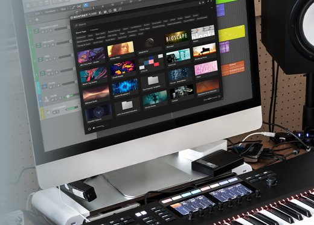

Native Instruments Kontakt #
Kontakt 是一款强大的采样器平台，提供广泛的音色库和灵活的声音设计选项。它适用于各种音乐风格，并具有丰富的第三方采样库可供选择。

Spectrasonics Omnisphere #
Omnisphere 是一款综合性的音源软件，融合了采样、合成和声音设计功能。它提供了巨大的音色库和创造性的音频处理工具。
Arturia V Collection #
V Collection 是一个集合了多个经典模拟合成器的软件包，包括 Minimoog、Prophet、Jupiter 等等。它提供了逼真的模拟音色和直观的控制界面。
u-he Diva #
Diva 是一款模拟合成器，旨在模拟经典模拟合成器的音色。它提供了高质量的模拟音色和广泛的调制选项。